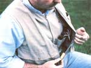
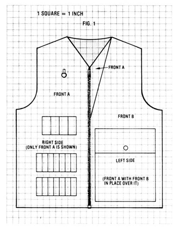
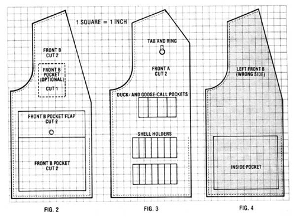
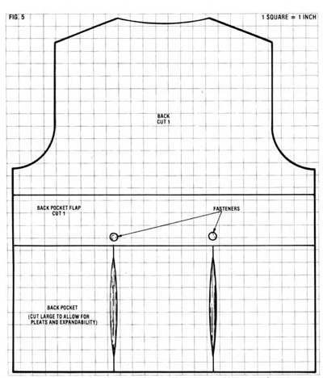
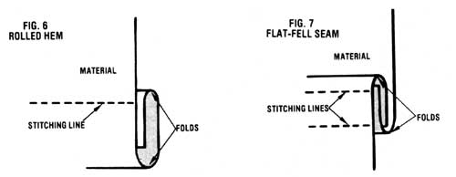

With autumn coming on fast, there's still time to treat yourself, or the outdoorsman or -woman in your life, by sewing...
If you (or someone you know) have fruitlessly searched the racks of your local sporting goods stores (and the pages of catalogs!) for a hunting vest that's designed to carry all of the items an outdoorsperson needs, don't despair! My husband had the same problem, and the custom-tailored , double-fronted garment I designed for him may be just what you've been looking for, too. What's more, it will likely cost less than would a (probably unsatisfactory) storebought version.
When my man took up duck hunting in earnest, he began to realize the need for a vest that would afford a place for everything and would keep everything in its place. His dream garment-he told me-would have not only the standard large game pouch in back, but would also feature individual pockets to hold nearly two boxes of shotgun shells for easy and quick reloading, similar pouches for his duck and goose calls, and several other pockets for miscellaneous hunting paraphernalia. And after vainly trying to scout up a commercial vest that could meet his requirements, my mate asked me to make him one.
So, keeping that dream vest in mind, I created a garment with two layers in front ... each with multiple pockets, some specialized and some general-purpose. Easy access to all of these was provided for by cutting the outer layer in such a way as to leave a wider opening in the center than the inner vest has, and by attaching a zipper only to the bottom 9 inches of the outer layer.
Furthermore, you don't need to be an expert seamstress or tailor to put together a more-thanserviceable hunting vest following my method! The cost of materials should be in the neighborhood of $25 (mine cost a total of $19.88, but I already had a pattern and a few of the other necessary items on hand).
GATHER THE MATERIALS
You'll need the following equipment to make the vest:
[1] About 3-1/3 yards (you may have to buy 3-1/2 yards, as many stores don't like cutting cloth in thirds) of sturdy, 45-inch-wide fabric, such as duck, twill, denim, or canvas . . . you might have to go to a specialty store for the last item. (I used heavy twill at $4.99 per yard, which came to $16.60. The other fabrics should be approximately the same price.) You may require more or less fabric, depending on the size pattern you use.
[2] One man's vest pattern, such as the Simplicity "Set of Vests" (No. 9793) at $3.50, or the Butterick "Men's Lined Vest" (No. 4005) at $2.50. 1 happened to have a pattern for a size 44 man's suit, which included a vest, and used that ... though it did require some modification. Keep in mind, when choosing your pattern, that a hunting vest should fit over other outerwear and will therefore be larger than the wearer's normal vest size.
[3] One 22-inch, heavyweight jacket zipper. (The model by J & P Coats is marketed for $1.75.)
[4] Four heavy-duty 1/2-inch snaps (or your own favorite pocket fastener-such as the self-adhering kind-that will allow for easy, one-handed opening). An appropriate snap-fastener set, with an attaching tool and a hole puncher, sells for $3.00 to $3.50, but I'd suggest that you try to borrow these first if you don't have them.
[5] One package of regular or wide bias tape (approximately 954).
(6] One spool of cotton-covered polyester thread (around $ 1.09).
[7] One 1/2-inch or larger metal ring (approximately 10c).
[8] Several feet of cord ... the amount needed will depend upon the number of game calls the wearer is likely to carry (about 20c/foot).
[9] Five feet of 3-inch-wide heavy elastic, if you choose this option when making the shotgun-shell holders (see below), at roughly $2.25/yard.
You'll also need a pair of sharp scissors, a piece of fabric marking chalk, a number of straight pins, some brown paper (or paper begs), and access to a sewing machine (or to a friend who sews!).
MODIFYING THE PATTERN
Since I used a man's dress-vest pattern as the basis for my project, I had to add length to the components before thinking about how to handle the special "hunter's" modifications. If you use a pattern for a hip-length vest (such as those listed above), this step shouldn't be necessary. Whichever you use, however, it's a good idea to make some trial fittings--using the basic pattern--before you go on. I pinned mine together at the shoulders and sides and hid my husband try the paper vest on, which he found a bit snug (since the original garment was meant to go under a suit jacket): After I added an inch-wide strip of paper to each side scam, it fit perfectly. (Pattern paper is flimsy and tears easily, so it's best to lay your pieces out on a sheet of brown paper-disassembled supermarket bags work fine!and cut around them. The heavier paper pattern will stand up to repeated fittings, if necessary.)
Remember that you'll have to prepare patterns for two sets of vest fronts, since the vest is to be double-layered (Fig. 1). Mark the inner set "Front A" and the outer set "Front B". (Front A should be cut wider, from the neck opening to the chest, than Front B, as shown in Figs. I and 2). Now, draw all of your pockets onto the patterns, making sure that they are exactly the right size and shape. The Front A pieces of my vest incorporate the duck- and goose-call pockets and the shotgun-shell holders (Fig. 3). The Front B pieces accommodate two large outside pockets with flaps ... the (optional) small pocket on the right side (Fig. 2) ... and two inside pockets (Fig. 4), which are attached to the wrong side. [EDITOR'S NOTE: For you hunters unfamiliar with sewing jargon right and wrong refer to the front and back sides of a piece of fabric, respectively, and have nothing to do with morality.] The back of the vest supports the single large game pouch (Fig. 5). On my vest, the back pocket was cut to 14" X 40" to allow for pleats and expandability.
Once you've settled on the sizes, shapes, and locations of all of your pockets, make a separate paper pattern for each so that later you can lay them out on the fabric to cut the pieces you'll need. (Don't forget the pocket flaps!)
CUTTING THE FABRIC
Preshrink and press the fabric, if necessary ... then place all of your pattern pieces on the cloth, arranging them so as to waste as little material as possible (there's always another project down the road!). Be sure to leave space for a one-inch seam allowance around all sides of each piece! Attach the patterns to the cloth with straight pins, draw the seam allowances around them with marking chalk, and then cut out all of the pieces.
ASSEMBLING AND ATTACHING THE POCKETS
Begin sewing the vest by assembling and attaching the pockets in the following manner:
[1] Sew the oversized pleats into the back pocket.
[2] Hem all of the pocket pieces, flaps, and shell- and call-holder strips, using a rolled hem so that no raw edges show. [EDITOR'S NOTE: To you experts, a "rolled hem" may suggest the kind of very fine, narrow hem found on handkerchiefs or lingerie. Here, the author simply means that the material is folded double, as shown in Fig. 6.]
[3] Check the finished pockets against the drawings on the pattern to make sure they're all of the correct size.
[4] Attach the Front B inside pockets to the wrong side of the Front B pieces (Fig. 4).
[5] Sew the Front B outside pockets and pocket flaps to the right sides of that component and attach the fasteners to the pockets (Fig. 1).
[6] Sew the back pocket and back pocket flap to the right side of the vest back and attach the fasteners (Fig. 5).
SEWING SHELL AND CALL HOLDERS
The trickiest task involved in making this vest for me, at least-was sewing the shell holders. However, after some trial-and-error practice using scrap fabric, I came up with the following method:
[1] Lay two of the 3" X 12" shell-holder strips, one on top of the other, in position on the right side of the Front A panel. Then sew them together and to Front A along one 3-inch end (Fig. 3).
[2] Slip a shell of the correct size for the wearer's gun (or, if he or she has more than one firearm, the largest-sized shell used) against the end seam and between the two shell-holder pieces, and sew the parts together to form a tube for the shell. Next, place another shell between the vest fabric and the bottom shell-holder piece. Sew that bottom piece to the vest, forming a second tube. Then insert a third shell between the two shell-holder sections (as you did with the first shell) to make a third tube. Continue until all of the tubes are formed in a honeycomb-like pattern.
[3] Stitch across the bottom of the holder, so that the shells won't fall out and the holder is securely fastened to Front A.
The call holders are formed in much the same manner, by laying the calls onto Front A and placing the 3 " X 13 " call-holder strip over them. Just pin the material to the vest between calls, remove the calls, and stitch the holder to the vest along the pinned lines and at its bottom edge.
[EDITOR'S NOTE: A simpler, though perhaps less aesthetic, method of making the shell holders (it's often used in commercial vests) requires that you use a wide strip of heavy elastic-the kind used in girdles--instead of cloth. Hem the ends and sew the elastic strip ends and bottom to a backing strip-or directly onto Front A-then stitch it down vertically, at about one-inch intervals, to form tubes. If the wide elastic isn't available in your area, multiple strips of narrower material could be used, or a single strip could be attached to form loops rather than pockets. Elastic has the advantage of being able to hold a variety of shell sizes firmly.]
The last step before assembling the vest is to sew the metal ring and its tab onto Front A at a point above the call pockets. Cords tied to each call are then fastened to the ring, and should be long enough to permit the calls to be used while still attached.
ASSEMBLING THE VEST
[1] Roll-hem the sides and centers of Front A and Front B ... leaving the shoulders, the armholes, and the bottom unhemmed. Then roll-hem the back vest neck (or use bias tape, for a smoother finish).
[2] Lay the left and right Front A pieces on a flat surface with their shell holders up. Place the left and right Front B pieces on top of the Front A sections with their flapped pockets up. Sew the Front B and Front A pieces together, starting at a point along the center front of the pieces, 10 inches up from the bottom, and proceeding down to the bottom, along it, up the side, around the armhole, and across the shoulder (Fig. 1).
[3] Now, attach the double-layered fronts to the back piece at the shoulders with a flat-fell seam (Fig. 7). To do so, stitch the seam with the right side of the fabric out, using the full seam allowance. Then press the seam allowance to one side, keeping the stitching line on top. Next, trim the underside of the allowance to one-half its width. Finally, turn the upper seam allowance evenly over the trimmed edge, and topstitch. Use the same type of seam to sew the sides together. Remember that the front is double-layered, so there'll be three layers of material in the seam, not just two.
[4] Hem the bottom.
[5] Finish the armholes with bias tape.
[6] Stitch the zipper in place, sewing it from the bottom to the neck of Front A but only to the lower 9 inches of Front B. This will provide easy access to the shell holders and inside pockets when the vest is zipped (see the photo).
FINISHED PRODUCT
It took me the better part of a weekend to design and sew this vest, using a modified commercial pattern. You could alter a pattern of your choice to suit my method, or work from the drawings I've provided. (Keep in mind that the pattern I used was a size 44 garment, thus you'd have to make size adjustments as necessary.) The total cost of the materials for my husband's vest was less than $20, though I did already have a pattern, metal ring, and cord ... and found other items on sale. Your expenses will vary according to what you have on hand or can scrounge or pick up at a discount, but it shouldn't come to much more than $25. And for that cost, you'll end up with a dandy custom-tailored hunting vest .. . . and, quite likely, a very happy hunter!
|
 |
|
 |
|
 |
 |
 |